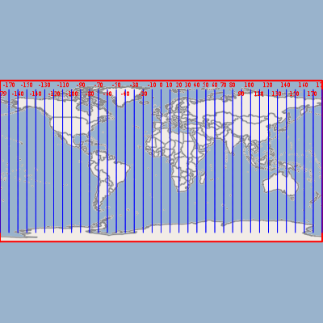
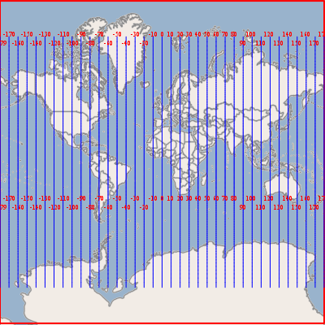
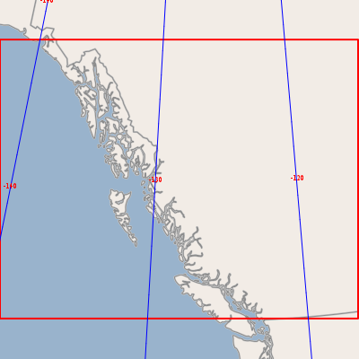
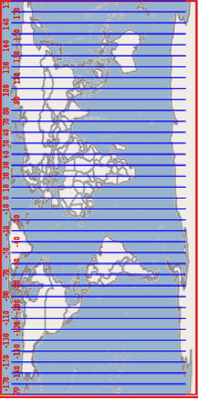

Geometry CRS Tutorial¶
Welcome¶
Welcome to Geospatial for Java. This workbook is aimed at Java developers who are new to geospatial and would like to get started.
Please set up your development environment prior to starting this tutorial. We will list the maven dependencies required at the start of the workbook.
This work book covers the dirty raw underbelly of the GIS world; yes I am afraid we are talking about Math. However please do not be afraid, all the math amounts to is shapes drawn on the earth.
This workbook is constructed in a code first manner, allowing you to work through the code example and read on if you have any questions.
This workbook is featured as part of OSDC2011, FOSS4G 2010 and FOSS4G 2009 conferences.
Jody Garnett
Jody Garnett is the lead architect for the uDig project; and on the steering committee for GeoTools; GeoServer and uDig. Taking the role of geospatial consultant a bit too literally Jody has presented workshops and training courses on every continent (except Antarctica). Jody Garnett is an employee of LISAsoft.
Michael Bedward
Michael Bedward is a researcher with the NSW Department of Environment and Climate Change and an active contributor to the GeoTools users’ list. He has a particularly wide grasp of all the possible mistakes one can make using GeoTools.
CRS Lab Application¶
This tutorial gives a visual demonstration of coordinate reference systems by displaying a shapefile and shows how changing the map projection morphs the geometry of the features.
- Please ensure your pom.xml includes the following:
<dependencies>
<dependency>
<groupId>org.geotools</groupId>
<artifactId>gt-shapefile</artifactId>
<version>${geotools.version}</version>
</dependency>
<dependency>
<groupId>org.geotools</groupId>
<artifactId>gt-swing</artifactId>
<version>${geotools.version}</version>
</dependency>
<dependency>
<groupId>org.geotools</groupId>
<artifactId>gt-epsg-hsql</artifactId>
<version>${geotools.version}</version>
</dependency>
</dependencies>
- Create the CRSLab.java file and copy and paste the following code:
package org.geotools.tutorial.crs;
import java.awt.event.ActionEvent;
import java.io.File;
import java.io.Serializable;
import java.util.HashMap;
import java.util.Map;
import javax.swing.Action;
import javax.swing.JButton;
import javax.swing.JOptionPane;
import javax.swing.JToolBar;
import javax.swing.SwingWorker;
import com.vividsolutions.jts.geom.Geometry;
import org.geotools.data.DataStore;
import org.geotools.data.DataStoreFactorySpi;
import org.geotools.data.DefaultTransaction;
import org.geotools.data.FeatureWriter;
import org.geotools.data.FileDataStore;
import org.geotools.data.FileDataStoreFinder;
import org.geotools.data.Query;
import org.geotools.data.Transaction;
import org.geotools.data.shapefile.ShapefileDataStoreFactory;
import org.geotools.data.simple.SimpleFeatureCollection;
import org.geotools.data.simple.SimpleFeatureIterator;
import org.geotools.data.simple.SimpleFeatureSource;
import org.geotools.data.simple.SimpleFeatureStore;
import org.geotools.feature.simple.SimpleFeatureTypeBuilder;
import org.geotools.geometry.jts.JTS;
import org.geotools.map.FeatureLayer;
import org.geotools.map.Layer;
import org.geotools.map.MapContent;
import org.geotools.referencing.CRS;
import org.geotools.styling.SLD;
import org.geotools.styling.Style;
import org.geotools.swing.JMapFrame;
import org.geotools.swing.JProgressWindow;
import org.geotools.swing.action.SafeAction;
import org.geotools.swing.data.JFileDataStoreChooser;
import org.opengis.feature.Feature;
import org.opengis.feature.FeatureVisitor;
import org.opengis.feature.simple.SimpleFeature;
import org.opengis.feature.simple.SimpleFeatureType;
import org.opengis.feature.type.FeatureType;
import org.opengis.referencing.crs.CoordinateReferenceSystem;
import org.opengis.referencing.operation.MathTransform;
import org.opengis.util.ProgressListener;
/**
* This is a visual example of changing the coordinate reference system of a feature layer.
*/
public class CRSLab {
private File sourceFile;
private SimpleFeatureSource featureSource;
private MapContent map;
public static void main(String[] args) throws Exception {
CRSLab lab = new CRSLab();
lab.displayShapefile();
}
- Notice that we are customizing the JMapFrame by adding two buttons to its toolbar: one to check that feature geometries are valid (e.g. polygon boundaries are closed) and one to export reprojected feature data.
private void displayShapefile() throws Exception {
sourceFile = JFileDataStoreChooser.showOpenFile("shp", null);
if (sourceFile == null) {
return;
}
FileDataStore store = FileDataStoreFinder.getDataStore(sourceFile);
featureSource = store.getFeatureSource();
// Create a map context and add our shapefile to it
map = new MapContent();
Style style = SLD.createSimpleStyle(featureSource.getSchema());
Layer layer = new FeatureLayer(featureSource, style);
map.layers().add(layer);
// Create a JMapFrame with custom toolbar buttons
JMapFrame mapFrame = new JMapFrame(map);
mapFrame.enableToolBar(true);
mapFrame.enableStatusBar(true);
JToolBar toolbar = mapFrame.getToolBar();
toolbar.addSeparator();
toolbar.add(new JButton(new ValidateGeometryAction()));
toolbar.add(new JButton(new ExportShapefileAction()));
// Display the map frame. When it is closed the application will exit
mapFrame.setSize(800, 600);
mapFrame.setVisible(true);
}
- Here is how we have configured JMapFrame:
- We have enabled a status line; this contains a button allowing the map coordinate reference system to be changed.
- We have enabled the toolbar and added two actions to it (which we will be defining in the next section).
Validate Geometry¶
Our toolbar action is implemented as a nested class, with most of the work being done by a helper method in the parent class.
- Create the ValidateGeometryAction mentioned in the previous section as an inner class.
class ValidateGeometryAction extends SafeAction {
ValidateGeometryAction() {
super("Validate geometry");
putValue(Action.SHORT_DESCRIPTION, "Check each geometry");
}
public void action(ActionEvent e) throws Throwable {
int numInvalid = validateFeatureGeometry(null);
String msg;
if (numInvalid == 0) {
msg = "All feature geometries are valid";
} else {
msg = "Invalid geometries: " + numInvalid;
}
JOptionPane.showMessageDialog(null, msg, "Geometry results",
JOptionPane.INFORMATION_MESSAGE);
}
}
- This method checks the geometry associated with each feature in our shapefile for common problems (such as polygons not having closed boundaries).
private int validateFeatureGeometry(ProgressListener progress) throws Exception {
final SimpleFeatureCollection featureCollection = featureSource.getFeatures();
// Rather than use an iterator, create a FeatureVisitor to check each fature
class ValidationVisitor implements FeatureVisitor {
public int numInvalidGeometries = 0;
public void visit(Feature f) {
SimpleFeature feature = (SimpleFeature) f;
Geometry geom = (Geometry) feature.getDefaultGeometry();
if (geom != null && !geom.isValid()) {
numInvalidGeometries++;
System.out.println("Invalid Geoemtry: " + feature.getID());
}
}
}
ValidationVisitor visitor = new ValidationVisitor();
// Pass visitor and the progress bar to feature collection
featureCollection.accepts(visitor, progress);
return visitor.numInvalidGeometries;
}
Export Reprojected Shapefile¶
The next action will form a little utility that can read in a shapefile and write out a shapefile in a different coordinate reference system.
One important thing to pick up from this lab is how easy it is to create a MathTransform between two CoordinateReferenceSystems. You can use the MathTransform to transform points one at a time; or use the JTS utility class to create a copy of a Geometry with the points modified.
We use similar steps to export a shapefile as used by the Csv2Shape example. In this case we are reading the contents from an existing shapefile using a FeatureIterator; and writing out the contents one at a time using a FeatureWriter. Please close these objects after use.
- The action is a nested class that delegates to the exportToShapefile method in the parent class.
class ExportShapefileAction extends SafeAction {
ExportShapefileAction() {
super("Export...");
putValue(Action.SHORT_DESCRIPTION, "Export using current crs");
}
public void action(ActionEvent e) throws Throwable {
exportToShapefile();
}
}
- Exporting reprojected data to a shapefile:
private void exportToShapefile() throws Exception {
SimpleFeatureType schema = featureSource.getSchema();
JFileDataStoreChooser chooser = new JFileDataStoreChooser("shp");
chooser.setDialogTitle("Save reprojected shapefile");
chooser.setSaveFile(sourceFile);
int returnVal = chooser.showSaveDialog(null);
if (returnVal != JFileDataStoreChooser.APPROVE_OPTION) {
return;
}
File file = chooser.getSelectedFile();
if (file.equals(sourceFile)) {
JOptionPane.showMessageDialog(null, "Cannot replace " + file);
return;
}
- Set up a math transform used to process the data:
CoordinateReferenceSystem dataCRS = schema.getCoordinateReferenceSystem();
CoordinateReferenceSystem worldCRS = map.getCoordinateReferenceSystem();
boolean lenient = true; // allow for some error due to different datums
MathTransform transform = CRS.findMathTransform(dataCRS, worldCRS, lenient);
- Grab all features:
SimpleFeatureCollection featureCollection = featureSource.getFeatures();
- To create a new shapefile we will need to produce a FeatureType that is similar to our original. The only difference will be the CoordinateReferenceSystem of the geometry descriptor.
DataStoreFactorySpi factory = new ShapefileDataStoreFactory();
Map<String, Serializable> create = new HashMap<String, Serializable>();
create.put("url", file.toURI().toURL());
create.put("create spatial index", Boolean.TRUE);
DataStore dataStore = factory.createNewDataStore(create);
SimpleFeatureType featureType = SimpleFeatureTypeBuilder.retype(schema, worldCRS);
dataStore.createSchema(featureType);
//Get the name of the new Shapefile, which will be used to open the FeatureWriter
String createdName = dataStore.getTypeNames()[0];
- We can now carefully open an iterator to go through the contents, and a writer to write out the new Shapefile.
Transaction transaction = new DefaultTransaction("Reproject");
FeatureWriter<SimpleFeatureType, SimpleFeature> writer =
dataStore.getFeatureWriterAppend(createdName, transaction);
SimpleFeatureIterator iterator = featureCollection.features();
try {
while (iterator.hasNext()) {
// copy the contents of each feature and transform the geometry
SimpleFeature feature = iterator.next();
SimpleFeature copy = writer.next();
copy.setAttributes(feature.getAttributes());
Geometry geometry = (Geometry) feature.getDefaultGeometry();
Geometry geometry2 = JTS.transform(geometry, transform);
copy.setDefaultGeometry(geometry2);
writer.write();
}
transaction.commit();
JOptionPane.showMessageDialog(null, "Export to shapefile complete");
} catch (Exception problem) {
problem.printStackTrace();
transaction.rollback();
JOptionPane.showMessageDialog(null, "Export to shapefile failed");
} finally {
writer.close();
iterator.close();
transaction.close();
}
}
Running the Application¶
To switch between map projections:
- When you start the application you will be prompted for a shapefile to display. In the screenshots below we are using the bc_border map which can be downloaded as part of the uDig sample dataset
{kind=link}
GeoTools includes a very extensive database of map projections defined by EPSG reference numbers. For our example shapefile, an appropriate alternative map projection is BC Albers.
You can find this quickly in the chooser list by typing 3005.
When you click OK the map is displayed in the new projection:
{kind=link}
Note that when you move the mouse over the map the coordinates are now displayed in metres (the unit of measurement that applies to the BC Albers projection) rather than degrees.
- To return to the original projection, open the CRS chooser again and type
4326 for the default geographic projection.
Notice that the map coordinates are now expressed in degrees once again.
Exporting the reprojected data:
When you change the map projection for the display the shapefile remains unchanged.
With the bc_border shapefile, the feature data are still in degrees but when we select the BC Albers projection the features are reprojected on the fly.
Set the display of reprojected data (e.g. 3005 BC Albers for the bc_border shapefile).
Click the Validate geometry button to check feature geometries are ok.
If there are no geometry problems, click the Export button and enter a name and path for the new shapefile.
Things to Try¶
Here are a couple things to try with the above application.
Have a look at the coordinates displayed at the bottom of the screen in EPSG:4326 and in EPSG:3005. You should be able to see that one is measured in degrees and the other measured in meters.
Make a button to print out the map coordinate reference system as human readable “Well Known Text”. This is the same text format used by a shapefile’s “prj” side car file.
It is bad manners to keep the user waiting; the SwingWorker class is part of Java 6. GeoTools also includes SwingWorker the gt-swing module for use in Java 5 applications.
Replace your ValidateGeometryAction with the following:
class ValidateGeometryAction2 extends SafeAction {
ValidateGeometryAction2() {
super("Validate geometry");
putValue(Action.SHORT_DESCRIPTION, "Check each geometry");
}
public void action(ActionEvent e) throws Throwable {
// Here we use the SwingWorker helper class to run the validation routine in a
// background thread, otherwise the GUI would wait and the progress bar would not be
// displayed properly
SwingWorker worker = new SwingWorker<String, Object>() {
protected String doInBackground() throws Exception {
// For shapefiles with many features its nice to display a progress bar
final JProgressWindow progress = new JProgressWindow(null);
progress.setTitle("Validating feature geometry");
int numInvalid = validateFeatureGeometry(progress);
if (numInvalid == 0) {
return "All feature geometries are valid";
} else {
return "Invalid geometries: " + numInvalid;
}
}
protected void done() {
try {
Object result = get();
JOptionPane.showMessageDialog(null, result, "Geometry results",
JOptionPane.INFORMATION_MESSAGE);
} catch (Exception ignore) {
}
}
};
// This statement runs the validation method in a background thread
worker.execute();
}
}
Visit the JTS web site and look up how to simplify geometry. Modify the example to simplify the geometry before writing it out - there are several techniques to try (the TopologyPreservingSimplifier and DouglasPeuckerSimplifier classes are recommended).
This exercise is a common form of data preparation.
One thing that can be dangerous about geometry, especially ones you make yourself, is that they can be invalid.
There are many tricks to fixing an invalid geometry. An easy place to start is to use geometry.buffer(0). Use this tip to build your own shapefile data cleaner.
An alternate to doing all the geometry transformations by hand is to ask for the data in the projection required.
This version of the export method shows how to use a Query object to retrieve reprojected features and write them to a new shapefile instead of transforming the features ‘by hand’ as we did above.
Query query = new Query(typeName);
query.setCoordinateSystemReproject(map.getCoordinateReferenceSystem());
SimpleFeatureCollection featureCollection = featureSource.getFeatures(query);
// And create a new Shapefile with the results
DataStoreFactorySpi factory = new ShapefileDataStoreFactory();
Map<String, Serializable> create = new HashMap<String, Serializable>();
create.put("url", file.toURI().toURL());
create.put("create spatial index", Boolean.TRUE);
DataStore newDataStore = factory.createNewDataStore(create);
newDataStore.createSchema(featureCollection.getSchema());
Transaction transaction = new DefaultTransaction("Reproject");
SimpleFeatureStore featureStore;
featureStore = (SimpleFeatureStore) newDataStore.getFeatureSource(typeName);
featureStore.setTransaction(transaction);
try {
featureStore.addFeatures(featureCollection);
transaction.commit();
JOptionPane.showMessageDialog(null, "Export to shapefile complete", "Export",
JOptionPane.INFORMATION_MESSAGE);
} catch (Exception problem) {
transaction.rollback();
problem.printStackTrace();
JOptionPane.showMessageDialog(null, "Export to shapefile failed", "Export",
JOptionPane.ERROR_MESSAGE);
} finally {
transaction.close();
}
}
Geometry¶
Geometry is literally the shape of GIS.
Usually there is one geometry for a feature; and the attributes provide further description or measurement. It is sometimes hard to think of the geometry as being another attribute. It helps if you consider situations where there are several representations of the same thing.
We can represent the city of Sydney:
- as a single location, ie. a point
- as the city limits (so you can tell when you are inside Sydney), ie. a polygon
Point¶
Here is an example of creating a point using the Well-Known-Text (WKT) format.
GeometryFactory geometryFactory = JTSFactoryFinder.getGeometryFactory( null );
WKTReader reader = new WKTReader( geometryFactory );
Point point = (Point) reader.read("POINT (1 1)");
You can also create a Point by hand using the GeometryFactory directly.
GeometryFactory geometryFactory = JTSFactoryFinder.getGeometryFactory( null );
Coordinate coord = new Coordinate( 1, 1 );
Point point = geometryFactory.createPoint( coord );
Line¶
Here is an example of a WKT LineString.
GeometryFactory geometryFactory = JTSFactoryFinder.getGeometryFactory( null );
WKTReader reader = new WKTReader( geometryFactory );
LineString line = (LineString) reader.read("LINESTRING(0 2, 2 0, 8 6)");
A LineString is a sequence of segments in the same manner as a java String is a sequence of characters.
Here is an example using the Geometry Factory.
GeometryFactory geometryFactory = JTSFactoryFinder.getGeometryFactory( null );
Coordinate[] coords =
new Coordinate[] {new Coordinate(0, 2), new Coordinate(2, 0), new Coordinate(8, 6) };
LineString line = geometryFactory.createLineString(coordinates);
Polygon¶
A polygon is formed in WKT by constructing an outer ring, and then a series of holes.
GeometryFactory geometryFactory = JTSFactoryFinder.getGeometryFactory( null );
WKTReader reader = new WKTReader( geometryFactory );
Polygon polygon = (Polygon) reader.read("POLYGON((20 10, 30 0, 40 10, 30 20, 20 10))");
Why not use Java Shape¶
Java Shape is actually very useful and covers ideas mentioned above – it is however very focused on drawing. Geometry allows us to handle the “information” part of Geographic Information System – we can use it to create new geometry and test the relationships between geometries.
// Create Geometry using other Geometry
Geometry smoke = fire.buffer( 10 );
Geometry evacuate = cities.intersection( smoke );
// test important relationships
boolean onFire = me.intersects( fire );
boolean thatIntoYou = me.disjoint( you );
boolean run = you.isWithinDistance( fire, 2 );
// relationships actually captured as a fancy
// String called an intersection matrix
//
IntersectionMatrix matrix = he.relate( you );
thatIntoYou = matrix.isDisjoint();
// it really is a fancy string; you can do
// pattern matching to sort out what the geometries
// being compared are up to
boolean disjoint = matrix.matches("FF*FF****");
You are encouraged to read the javadocs for JTS which contains helpful definitions.
Tip
The disjoint predicate has the following equivalent definitions:
- The two geometries have no point in common
- The DE-9IM Intersection Matrix for the two geometries is FF*FF****
- !g.intersects(this) (disjoint is the inverse of intersects)
Coordinate Reference System¶
Earlier we talked about the JTS library which provides our data model for Geometry. This is the real rocket science for map making – the idea of a shape and enough math to do something fun with it. But there is one question we have not answered yet – what does a geometry mean?
You may think I am joking but the question is serious. A Geometry is just a bunch of math (a set of points in the mathematical sense). They have no meaning on their own.
An easier example is the number 3. The number 3 has no meaning on its own. It is only when you attach a “unit” that the number 3 can represent a concept. 3 metres. 3 feet. 3 score years.
In order to provide a Geometry with meaning we need to know what those individual points mean. We need to know where they are located – and the data structure that tells us this is called the Coordinate Reference System.
The Coordinate Reference System defines a couple of concepts for us:
It defines the axis used – along with the units of measure.
So you can have lat measured in degrees , and lon measured in degrees from the equator.
Or you can have x measured in metres, and y measured in metres which is very handy for calculating distances or areas.
It defines the shape of the world. No really it does – not all coordinate reference systems imagine the same shape of the world. The CRS used by Google pretends the world is a perfect sphere, while the CRS used by “EPSG:4326” has a different shape in mind – so if you mix them up your data will be drawn in the wrong place.
As a programmer I view the coordinate reference system idea as a neat hack. Everyone is really talking about points in 3D space here – and rather than having to record x,y,z all the time we are cheating and only recording two points (lat,lon) and using a model of the shape of the earth in order to calculate z.
EPSG Codes¶
The first group that cared about this stuff enough to write it down in database form was the European Petroleum Standards Group (EPSG). The database is distributed in Microsoft Access and is ported into all kinds of other forms including the gt-hsql jar included with GeoTools.
- EPSG:4326
EPSG Projection 4326 - WGS 84
This is the big one: information measured by lat/lon using decimal degrees.
CRS.decode("EPSG:4326");DefaultGeographicCRS.WGS84;`
- EPSG: 3785
Popular Visualisation CRS / Mercator
The official code for the “Google map” projection used by a lot of web mapping applications. It is nice to pretend the world is a sphere (it makes your math very fast). However it looks really odd if you draw a square in Oslo.
CRS.decode("EPSG:3785");- EPSG:3005
NAD83 / BC Albers
Example of an “equal area” projection for the west coast of Canada. The axes are measured in metres which is handy for calculating distance or area.
CRS.decode("EPSG:3005");
{kind=link}
{kind=link}
{kind=link}
Note that both EPSG:4326 and EPSG:3785 are using lat/lon – but arrive at a very different shape for their map.
Axis Order¶
This is also where I need to make a public apology. As computer scientists we occasionally get fed up when we work in a domain where “they are doing it wrong”. Map making is an example of this. When we arrived on the scene maps were always recording position in latitude, followed by longitude; that is, with the north-south axis first and the east-west access second. When you draw that on the screen quickly it looks like the world is sideways as the coordinates are in”y/x” to my way of thinking and you need to swap them before drawing.
{kind=link}
We are so used to working in x/y order that we would end up assuming it was supposed to be this way – and have been fighting with map makers ever since.
So if you see some data in “EPSG:4326” you have no idea if it is in x/y order or in y/x order.
We have finally sorted out an alternative; rather than EPSG:4326 we are supposed to use “urn:ogc:def:crs:EPSG:6.6:4326”. If you ever see that you can be sure that a) someone really knows what they are doing and b) the data is recorded in exactly the order defined by the EPSG database.
Workarounds¶
You can perform a workaround on a case by case basis:
CRSAuthorityFactory factory = CRS.getAuthorityFactory(true);
CoordinateReferenceSystem crs = factory.createCoordinateReferenceSystem("EPSG:4326");
Or you can set a global hint to force GeoTools to use x/y order:
static void main( String args []){
System.setProperty("org.geotools.referencing.forceXY", "true");
....
}
For more Information¶
- EPSG registry
- This is the place to go to look up map projections. You can search by geographic area, name and type and epsg code.
- Online coordinate conversion tool
- Produced by Jan Jezek and powered by GeoTools.
- Wikibook: Coordinate Reference Systems and Positioning
- A summary page with some useful definition and links to more detailed information